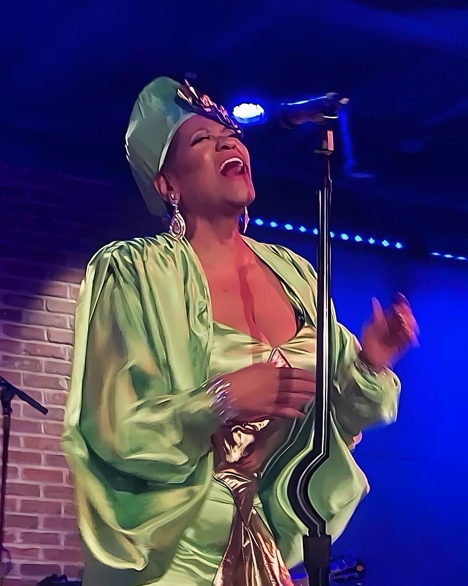
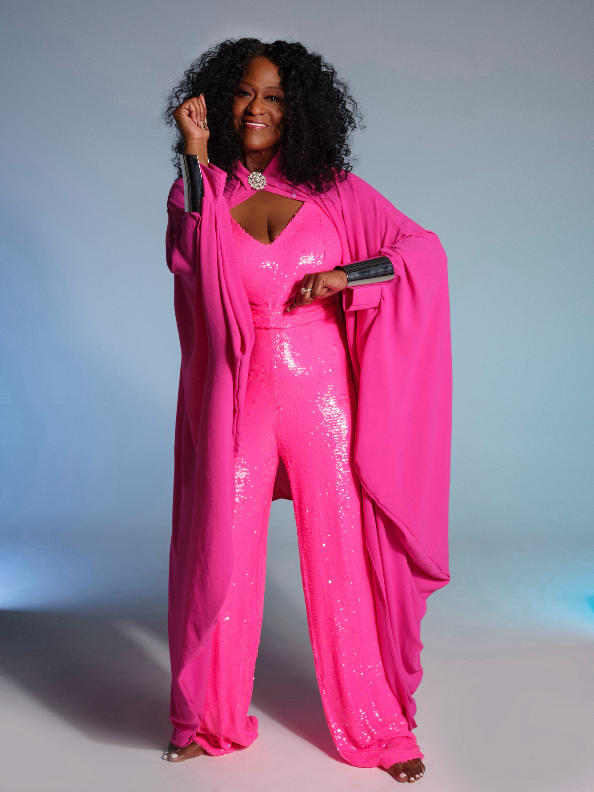
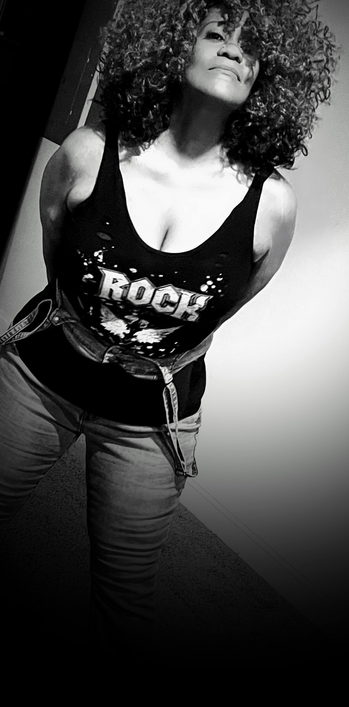
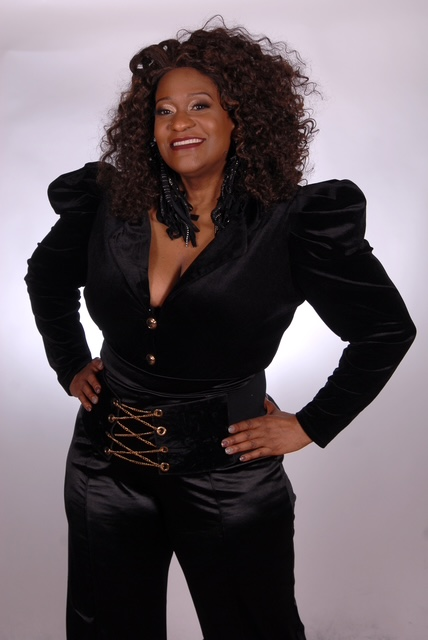
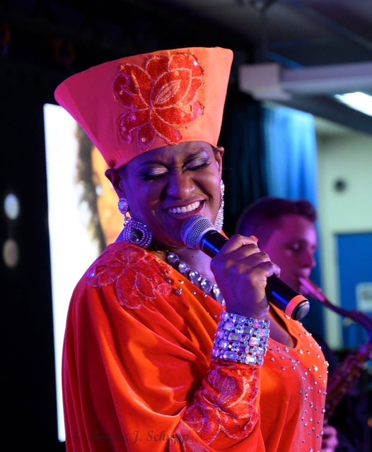

L.A. Young
"Steel Mill Blues meets Soul — forged in the heat, sung from the heart"

L.A. Young
Soul · Jazz · Blues · R&B
Biography
L.A. Young is a soul, jazz, blues, and R&B vocalist whose
voice has been compared to Chaka Khan meeting Phyllis Hyman —
a rare blend of raw power and silky emotional depth. A native of Ohio with deep roots
in the steel mill communities of the 1980s, she became the first female crane operator
in Ohio's steel industry at age 18 before answering her true calling to the stage.
Her career spans landmark stages and elite collaborations: from performing at
President Clinton's Second Inauguration to opening for
Frederick Anthony Jackson, recording with jazz legends
Pieces of A Dream, and currently producing new material with
iconic producer Norman Connors. Her single
"No One Can Love You More" reached #1 on UK FM Radio,
with multiple top-5 UK hits following.
A 2018 Maryland Music Awards Artist of the Year and
Woman's Basketball Hall of Fame Inductee, L.A. Young is known for electrifying live
performances and her acclaimed Phyllis Hyman tribute show,
which has drawn audiences from across the country. She performs regularly with her
band The Unusual Suspects and is available for concerts, festivals, corporate events,
galas, and private engagements.
Quick Reference
Genre
Soul / Jazz / Blues / R&B
Based In
Washington, DC Metro
Label / Mgmt
Gold Bottom Ent. LLC
Band
The Unusual Suspects
Signature Show
The Phyllis Hyman Experience
Set Length
45 min – 2 hours
UK #1 Hit — 31 Weeks
President Clinton Inaugural
MD Artist of the Year 2018
Pieces of A Dream
Norman Connors
Jazz Legacy Foundation
Premier DC Venues
Music & Releases
"The Woman In Me"
Written by Robert John Lange & Shania Twain
"No One Can Love You More"
Written by Skip Scarborough • Phyllis Hyman tribute
#1
UK FM Radio
31 Wks
On UK Charts
Top 5
Multiple Follow-ups
Spotify
Apple Music
YouTube Music
Amazon Music
Additional recordings and unreleased material available upon request for press and media.
Performance Formats
Every show is tailored to the venue, audience, and occasion.
The Unusual Suspects
Seasoned professionals with credits spanning P-Funk, The Temptations, and the Maryland Entertainment Hall of Fame.
Vocals / Music Director
L.A. Young
Band leader, arranger, recording artist
Saxophone
Eugene Chapman
Performed with P-Funk & The Temptations
Lead Guitar
Kevin Robinson
MD Entertainment Hall of Fame 2017
Bass
Kevin Walker
Performed with Prince, Patti LaBelle, Jodeci
MC / DJ
DJ Mocha Java
Tracks, production & rap vocals
Additional musicians (keys, bass, drums, percussion) engaged per show configuration. Full band roster available upon request.
Press Clippings
WPKN 89.5 FM — Jazz and Soul on Ice
"She wove a beautiful and elegant tapestry of Phyllis Hyman's life... the Queen was alive and among us."
— Tony "Doc" Hardy, Radio Host
FOSR101FM — Jazz on Ice
"Ms. Young's UK Soul hit has been on the UK charts for 31 weeks, regularly featured on both of my radio shows."
— Tony "Doc" Hardy, FOSR101FM
Clayton LeBoeuf — The Wire / Homicide
"L.A. Young is a whirlwind artist! She can call spirits down & lift spirits up with her singing."
— Clayton LeBoeuf, Lead Actor
Press Photos
High-resolution images available for editorial use. Contact management for full media kit.




Click any photo to view full size •
Request Hi-Res Photos
Stage & Technical Rider
Summary of standard requirements. Full technical rider provided upon booking confirmation.
🎤 Sound
- ✓ Professional PA system (venue-appropriate)
- ✓ 2 vocal microphones (SM58 or equivalent)
- ✓ Monitor wedges (2 minimum)
- ✓ DI box for backing tracks
- ✓ Sound engineer on site
💡 Stage & Lighting
- ✓ Minimum 12' x 10' stage area
- ✓ Stage lighting (front wash minimum)
- ✓ Power: 2 standard outlets on stage
- ✓ Dressing room / private green room
- ✓ Bottled water on stage
📋 Full Band Add-ons
- ✓ Drum kit (or space for artist's kit)
- ✓ Guitar amp (or DI)
- ✓ Bass amp (or DI)
- ✓ Keyboard stand + power
- ✓ Additional monitor mixes
Past Performances
FEB 14
Blues Alley
Washington, DC
MAR 21
The Phyllis Hyman Experience
Baltimore, MD
MAY 5
African American Cultural Festival
Baltimore, MD
AUG 14
Anacostia Playhouse
Washington, DC
NOV 12
Jazz Legacy Foundation Gala
Hampton, VA
DEC 26
City Winery
Washington, DC
Booking & Contact